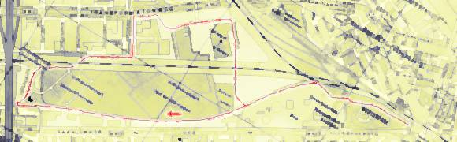

 |
|
Eigenlijk is Nederland een prachtig skate-land: het is erg plat,
er zijn veel fietspaden en iedere (echte) Nederlander kan al 'gewoon' schaatsen.
Nu alleen nog een skate-route. In Amsterdam kun je natuurlijk prachtig skaten in het Vondelpark, maar voor stillere wegen en zeer soepel asfalt kun je beter in het Westerpark terecht. In ieder geval ideaal voor beginners. Onderstaande route is niet erg groot, zelfs als je 'm vanaf het Amsterdam Centraal Station skate en weer terug is het slechts zo'n negen kilometers. De route zelf (vanaf de Haarlemmerpoort) is ongeveer 5,5 kilometer: 3,5 kilometer over de 'lus' en 1 kilometer heen en terug tussen de 'lus' en de Haarlemmerpoort. Een deel van de route is buiten het Westerpark. Helaas betekent dat ook een paar stukjes minder goed wegdek: twee korte stukjes over een tegelpad en een klein stukje over asfalt met scheuren (die overigens zó groot zijn dat ze al van een grote afstand zichtbaar zijn). Maar veruit het grootste deel gaat over perfect skate-asfalt. Vanaf het Centraal Station Amsterdam kom je bij het Westerpark via de Haarlemmerstraat/Haarlemmerdijk (1,5 km). Deze straten hebben goed asfalt, maar kennen ook veel verkeer en (hoe kan het ook anders) een brug met klinkers.
Start: Oostelijke ingang Westerpark (200 m van Haarlemmerpoort)
Edwin Martin <edwin@bitstorm.org> |